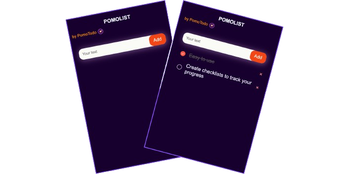

Boost Productivity with Our Pomodoro Timer
Follow the Pomodoro Technique to stay focused. Track your time, and achieve more with our easy-to-use Pomodoro timer.

What is the Pomodoro Technique?
The Pomodoro Technique is a time management method that involves working in focused 25-minute intervals ("Pomodoros") separated by short breaks. Developed by Francesco Cirillo in the late 1980s, this technique has gained widespread popularity due to its simplicity and effectiveness in improving focus, reducing procrastination, and increasing overall productivity.
How Does the Pomodoro Technique Work?
Here's a breakdown of the Pomodoro Technique's essential steps:
- Choose a task: Identify a specific task you want to work on.
- Set a timer for 25 minutes: This is your "Pomodoro."
- Work on the task: Focus solely on the chosen task until the timer rings.
- Take a short break: Stand up, stretch, grab a drink, or do something relaxing for 5 minutes.
- Repeat steps 2-4: After four Pomodoros, take a longer break (20-30 minutes).
Google Chrome Extention for Pomodoro Timer with Todo List
Try PomoList by PomoTodo a Google Chrome Extension, that helps you with Pomodoro Timer with a To-Do List for tasks tracking.
Why Use the Pomodoro Technique?
Here are some key benefits of using the Pomodoro Technique:
Increased focus: Short work intervals with defined breaks help maintain concentration and minimize distractions.
Reduced procrastination: Knowing you only have 25 minutes to work can motivate you to start and avoid delaying tasks.
Improved productivity: By tackling tasks in focused bursts, you can accomplish more in less time.
Enhanced time management: The technique encourages regular breaks, preventing burnout and improving overall time awareness.
Reduced stress: Knowing you have defined work and break periods can alleviate stress and anxiety about deadlines.
Ready to unleash your productivity potential? Try our Pomodoro timer today!
Frequently Asked Questions about Pomodoro Timer
What are Pomodoro sessions?
Pomodoro sessions are structured intervals of focused work time, typically lasting 25 minutes, followed by a short break of about 5 to 10 minutes. The Pomodoro Technique helps individuals manage their time and maintain focus by dividing work into intervals, known as Pomodoro sessions.
Who invented the Pomodoro Technique?
The Pomodoro Technique was invented by Francesco Cirillo in the late 1980s. Cirillo developed this time management method to improve his own productivity and named it after the tomato-shaped kitchen timer he used during his university studies.